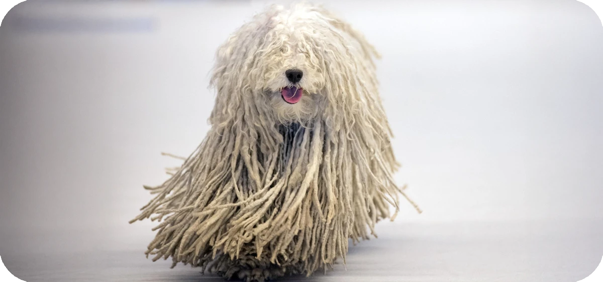

Presentación

El Komondor es una raza de perro guardián de rebaños de gran tamaño, originaria de Hungría, y es famoso por su pelaje blanco largo, grueso y característicamente acordonado. Estos cordones naturales, que se asemejan a rastas, lo protegen de las inclemencias del tiempo y de los depredadores, dándole una apariencia imponente y única que le permite camuflarse entre las ovejas que protege.
Personalidad
Los Komondor son perros serios, dignos y extremadamente protectores, con un fuerte instinto guardián desarrollado durante siglos. Aunque son tranquilos y devotos con su familia, son naturalmente desconfiados con los extraños y poseen un coraje inquebrantable para defender su territorio. Son independientes y decididos, requiriendo un liderazgo firme y una socialización temprana.
Origen
Es una de las razas más antiguas de Hungría, traída originalmente por los magiares desde Asia Central hace más de mil años. Su función principal era la protección de los rebaños en las llanuras húngaras, donde su pelaje acordonado evolucionó no solo como defensa física, sino también para pasar desapercibido entre el ganado mientras vigilaba la presencia de lobos u osos.
Salud
El Komondor suele tener una esperanza de vida de entre 10 y 12 años. Al ser una raza de gran tamaño, puede ser propenso a la torsión gástrica y a la displasia de cadera, por lo que el control del peso y el ejercicio moderado son vitales. También es importante vigilar su salud ocular y auditiva, ya que su denso pelaje puede dificultar la detección temprana de pequeñas infecciones o irritaciones.
Aseo
El mantenimiento del pelaje del Komondor es único: no se debe cepillar nunca, ya que esto desharía sus cordones naturales. El cuidado consiste en separar manualmente los mechones desde la raíz para evitar que se apelmacen en una sola masa. Los baños son una tarea laboriosa, ya que el secado completo de los cordones puede tardar días; además, es esencial mantener limpios los ojos y la boca para evitar acumulaciones de suciedad.
Nutrición
Dada su constitución robusta y su tamaño, necesita una dieta equilibrada de alta calidad formulada para razas grandes. Es fundamental evitar el ejercicio intenso antes y después de las comidas para prevenir riesgos digestivos. Debido a su pelaje voluminoso, es necesario controlar su peso mediante el tacto de sus costillas y ajustar las raciones según su nivel de actividad diaria.